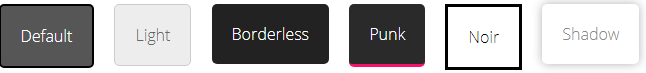

Este es un plugins para generar tooltips, los genera de varios tipos y de distintas formas:(mostrando el texto que ponemos en el title o un html entero)
Tootips en una imagen:
Tootips en una (span, div o lo que sea):
Un Mensaje de texto
Estilos en los tooltips (es necesario incluir los .css de los distintos temas a usar y estan en /css/plugins/tooltipster/sideTip/themes )

HTML dentro de tu tooltips (asegurate que el div que contiene tu contenido html no este con el display activo)
PASA EL RATON POR AQUI PARA VER EL HTML DENTRO DE UN TOOLTIPS
Este es el contenido de mi tooltips con Logo Opera!!
 Este es el contenido de mi tooltips con Logo Opera!!
Este es el contenido de mi tooltips con Logo Opera!!